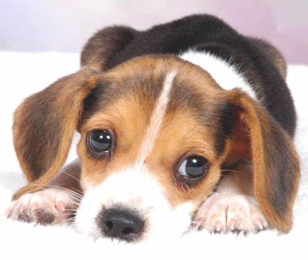

Cachorro - Thor
Thor foi encontrado abandonado na rua. Ele é muito carinhoso e procura um lar para sempre.

Gato - Mel
Mel é uma gata muito doce e tranquila, ideal para apartamentos pequenos.
Cachorro - Bella
Bella é uma cachorrinha alegre e cheia de energia. Ela adora brincar e fazer companhia.

Gato - Léo
Léo é um gato muito carinhoso e brincalhão. Ele adora interagir com humanos e outros animais.

Cachorro - Rex
Rex é um cachorro leal e protetor. Ele procura uma família que o cuide com muito amor.
Gato - Nina
Nina é uma gata tranquila e independente, perfeita para quem busca um animal de estimação calmo.